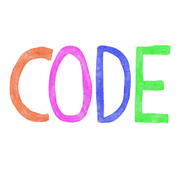
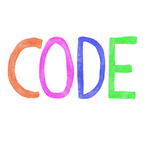

Yo soy Sonia
Soy una Programadora Web


Soy egresada de UPIICSA- IPN, de la carrera de Ingeniería en Informática, soy titulada, actualmente me encuentro en busca de empleo, me gusta el trabajo en equipo, la programación principalmente en java, me he dedicado al diseño y desarrollo web por mas de 10 años, he tenido la oportunidad de trabajar en varias empresas tanto de gobierno como privadas, soy autodidacta, me encanta nadar, el cine de arte y tomar cafe.
Trabajo en Equipo, iniciativa, flexibilidad, autodidacta,responsable.
Analisis y desarrollado de aplicaciones web para solventar necesidades del negocio u organización, utilizando los siguientes lenguajes de programación java, php, angular, PL SQL entre otros y los siguientes frameworks o librerias de desarrollo Struts2, Hibernate, Spring, Srpingboot, Bootstrap, Angular, JPA, JavaScript, Ajax y Jquery.
Instalación y configuración para la puesta en marcha de administradores de contenido como wordpress, Moodle y Joomla.
Manejo de diferentes versionadores de codigo como SVN, Tortoise, Gitlab y Github.
Manejo de diferentes gestores de bases de datos como Informix, Oracle, Postgresql, Mysql y Microsoft SQL Server.
Manejo de diferentes IDES de programación NetBeans, Eclipse, JDeveloper, Visual Studio Code y Atom.
Oracle Reports Developer, Jasper Reports y iText.
Técnico Básico en Gestión Integral del Riesgo
Registro Nacional de Profesionistas
SIIPSO (Sistema Integral de Información de Programas Sociales)
HABITAT
Micrositio junta de gobierno
Alertas y reportes hidrometeorológicos
Página de Monitoreo Volcanico
Página de Monitoreo Sismico
Micrositio Eventos
Micrositio PAGIR (Seminario Internacional para la Protección Animal en la Gestión Integral del Riesgo)
Micrositio Seminario internacional sobre la gestion de riesgos quimicos y tecnologicos
Gestión de la pagina del CENAPRED hasta aproximadamente el año 2019
Sistema de generación de informes
Sistema de generación de constancias
Administrador de reportes del volcan
Administrador de acelerogramas
Administrador de publicaciones
Sistema de generación de formularios
Sistema para la designación del comite de etica
Instalación de sistema de tickets OTRS
Instalación de plataformas Moodle
Instalación de servicio de almacenamiento de archivos Owncloud
Elaboración de webservices de reportes del volcan Popocatepetl
Generación del proceso de designacion de representantes de casilla
Sistema de control de inventarios a tiendas Elektra
Sistema de logistica de camiones LIPU
Modificiaciones Y migración del sistema de nomina SIREP SEDESOL
Modificiaciones y migración del codigo del sistema de nomina SIAPSEP WEB
Generación de webservices de sistemas de DISH para la conexion con el ERP de Oracle
©Sonia Ortiz Rea-2024, Todos los derechos reservados.